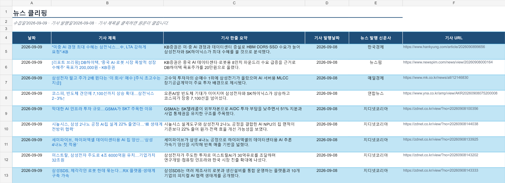

ARTICLE 01Written with AI
AI시대, 아주 편리하다고
우리는 이제 검색창에 단어를 조합하는 대신 AI에게 질문한다. 보고서의 초안을 만들고, 긴 회의를 요약하며, 낯선 언어로 된 자료도 몇 초 만에 이해한다. 분명 놀랍도록 편리한 시대다. 그러나 편리함이 곧 올바른 답을 뜻하지는 않는다.
AI가 내놓은 문장은 자연스럽지만 사실과 다르거나 익숙한 관점을 반복할 수 있다. 그래서 필요한 것은 결과를 의심하고 확인하는 태도다. 출처를 살피고, 빠진 목소리는 없는지 묻고, 목적에 맞게 다시 고치는 과정이 중요하다.
AI는 생각을 대신하는 기계보다 생각을 확장하는 동료에 가깝다. 질문이 구체적일수록 답과 결과는 더 선명해진다. 결국 AI시대의 경쟁력은 버튼을 빨리 누르는 속도가 아니라, 무엇을 왜 만들지 스스로 정하는 힘에 있다.
아주 편리하다고 감탄한 다음에는 한 번 더 물어야 한다. 이 결과를 믿을 수 있는가, 누구에게 도움이 되는가, 그리고 여기에 나의 생각은 얼마나 담겨 있는가. 편리함을 현명함으로 바꾸는 마지막 선택은 여전히 사람의 몫이다.